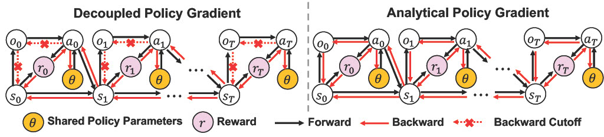
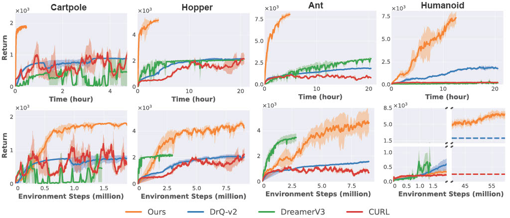
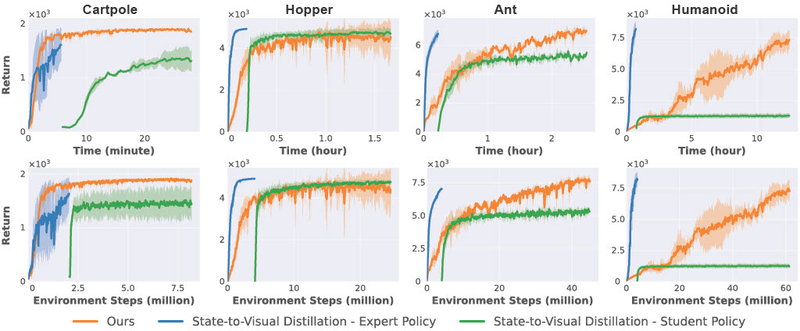
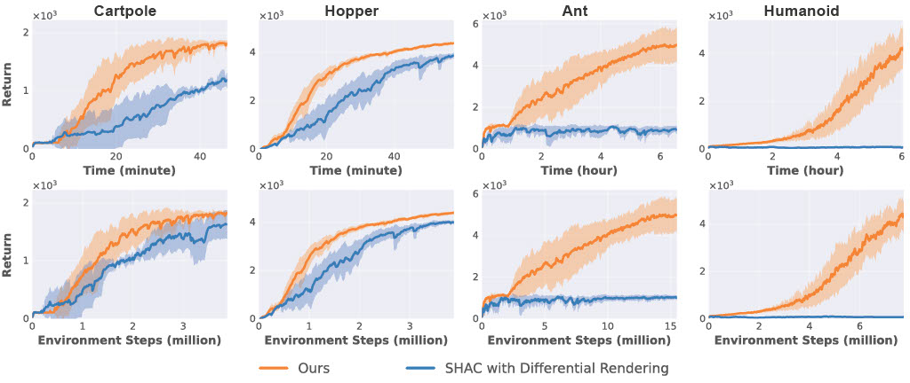

We show camera views of each environment in Blender
Half Cheetah
Hopper
Humanoid
Ant
Iteration 0
Iteration 9600 (4 hours of Training)
Iteration 36000 (15 hours of Training)
Iteration 0
Iteration 2000 (20 minutes of Training)
Iteration 16000 (6 hours of Training)
Iteration 0
Iteration 8000 (1 hour of Training)
Iteration 17600 (2.5 hours of Training)
Iteration 0
Iteration 800 (8 minutes of Training)
Iteration 30000 (5 hours of Training)
Our method achieves substantial speedups and significantly higher rewards across all tasks.

Our method matches distilled policy in final return and computation time on three simple tasks, but significantly outperforms it on the more challenging Humanoid locomotion task.

Our method matches SHAC on 2D tasks (Cartpole and Hopper) and outperforms SHAC on more challenging 3D tasks (Ant and Humanoid).

@misc{you2025acceleratingvisualpolicylearningparallel,
title={Accelerating Visual-Policy Learning through Parallel Differentiable Simulation},
author={Haoxiang You and Yilang Liu and Ian Abraham},
year={2025},
eprint={2505.10646},
archivePrefix={arXiv},
primaryClass={cs.LG},
url={https://arxiv.org/abs/2505.10646},
}